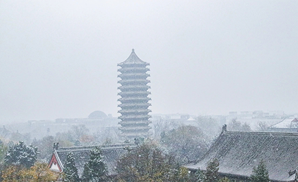

燕园风景
燕园的四季都别有韵味。
北大的冬季
2020年九月，我们初入燕园。
2020年11月，我们初逢北大的冬。
北大的冬天有种特有的清冽，让人清醒，却不冷。校园里的每一个角落里似乎都散落着独属于北大的温暖。
身处北大，亲眼目睹第一场雪蹁跹而至。循光舞动，落华流风，难掩惊喜，披衣出户，拥抱一场燕园冬日的纷飞烂漫。斜日淡烟，冷香幽韵；冰浦分沙，皓气妍华；徘徊入琼林，轻点寒鸦。水色与天色交汇，万籁寂静，惟雪簌簌有声，与博雅塔同伫立，时光的足音似清晰可听。这时，才终于有了一种真真切切的来到北大的感觉。
雪落之后，走在北大的校园之中，落英闲洒，密织成行，与北大红交映成辉，暧暧含光，檐间房栊，皆披云裳。暖暖的阳光，与时光共生长，向着远方，延伸无数憧憬。
在北大的第一个冬天，漫步在未名湖边，眺望远处的博雅塔，静谧而安详；自习在开着暖气的图书馆，徜徉在书的海洋，充实而愉悦；端着热气腾腾的咖啡，裹着厚厚的羽绒服......这个冬天像以前的每一个冬天一样如期而至，却又意义非凡。
======================================================================================
WhAt?? Why I sTilL HaVe tiMe to ReAd BOOks?! IF poSsibLe I'D liKE to ReaD AdVanceD MaTHMatiCS!!!